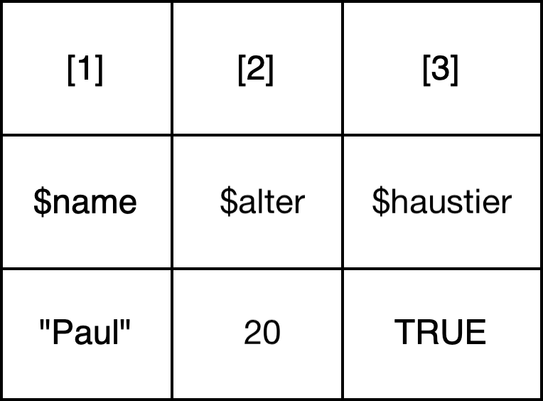

2 R Basics II: Datenstrukturen
Bisher haben wir Variablen als Platzhalter für Werte vom Typ character, integer, numeric oder logical genutzt. Variablen können aber auch Platzhalter für strukturierte Sammlungen von Werten sein. Die verschiedenen Weisen, wie Daten in R organisiert und im Speicher repräsentiert werden können, werden Datenstrukturen genannt. Solche Datenstrukturen können entweder nur Elemente vom selben Typ aufnehmen (wie z.B. Vektoren und Matrizen), oder Elemente unterschiedlichen Typs (wie z.B. Listen und Dataframes). Wir werden in diesem Kapitel alle wichtigsten Datenstrukturen besprechen. In der Praxis werden wir aber vor allem mit Vektoren und Dataframes arbeiten.
2.1 Grundlegende Begriffe
| Begriff | Englische Entsprechung | Definition (im R-Kontext) |
|---|---|---|
| Element | Element | Wert oder anderes Objekt innnerhalb einer Datenstruktur. Datenstrukturen können selbst Elemente einer anderen Datenstruktur sein. Elemente haben einen Index und manchmal zusätzlich einen Namen (oder ‘Schlüssel’), über den auf das Element zugegriffen werden kann. |
| Index | Index | Position eines Elements innerhalb einer Datenstruktur. Ein Index ist in R immer eine Zahl >= 1. |
| Indexierung | Indexing | Überbegriff für verschiedene Operationen, mit denen auf Elemente in einer Datenstruktur zugegriffen werden kann. |
| Zugreifen | Access | Operation, bei der durch den Einsatz spezifischer Operatoren Elemente einer Datenstruktur ausgewählt, diese extrahiert oder modifiziert werden können. |
| Vektorisierung | Vectorization | Mechanismus, bei dem Funktionen oder Operationen automatisch auf alle Elemente eines Vektors angewandt werden, statt auf einzelne Elemente. |
| Dimension | Dimension | In Bezug auf Matrizen die Anzahl von Zeilen und Spalten (angegeben als Zeilen x Spalten). In Bezug auf Arrays allgemein die Anzahl der verschiedenen ‘Richtungen’, in denen Daten organisiert sind. Bei einem Array können das nicht nur Zeilen und Spalten sein, sondern auch ‘Schichten’ von Matrizen und andere Organisationsweisen. |
2.2 Vektoren
Eigentlich haben wir in der letzten Stunde schon Vektoren kennengelernt. Denn in R ist jeder einzelne Wert zugleich ein Vektor der Länge 1. Vektoren sind nämlich im Grunde Sequenzen verschiedener Werte desselben Datentyps. Die Werte innerhalb eines Vektors werden Elemente genannt. Jedes Element in einem Vektor hat eine Position (auch “Index” genannt). Über diesen Index kann auf jedes Element einzeln zugegriffen werden. Der Zugriff auf Elemente des Vektors erfolgt mithilfe von eckigen Klammern (s.u.).

Vektoren können mithilfe von bestimmten Funktionen (lernen wir noch) erstellt werden. Wenn bei der Erstellung bekannt ist, wie viele Elemente ein Vektor haben wird und welchen Datantyp die Elemente haben sollen, können die Funktionen character() oder numeric() zur Erstellung verwendet werden:
# leeren character-Vektor erstellen: character(0) bedeutet, dass der Vektor keine Elemente hat
character() #> character(0)#> [1] "" "" "" ""#> [1] 0 0 0Im Regelfall ist aber die Anzahl der Elemente und/oder deren Datentyp bei der Erstellung noch nicht bekannt. In diesem Fall wird zur Erstellung die Funktion c() verwendet:
#> NULLWenn ein leerer Vektor erstellt wird, wird dieser mithilfe des Werts NULL repräsentiert. Darauf kommen wir am Ende der Sitzung noch einmal zurück.
Mithilfe der Funktion c() können auch Vektoren aus bereits bekannten Elementen erstellt werden:
#> [1] 1 2 3# Vektoren mit selbst gewählten Elementen erstellen
leckere_fruechte <- c("Apfel", "Banane", "Erdbeere")
coole_zahlen <- c(45, 7, 420)Vektoren können auch in einen neuen Vektor zusammengefügt werden. Wenn die Funktion c() auf zwei Vektoren oder einen Vektor und ein Element angewandt wird, dann werden die beiden Vektoren in der angegebenen Reihenfolge in einen neuen Vektor kombiniert:
# Vektoren kombinieren mithilfe der Funktion c()
fruechte_und_zahlen <- c(leckere_fruechte, coole_zahlen)
# Vektor auf dem Bildschirm ausgeben
print(fruechte_und_zahlen)#> [1] "Apfel" "Banane" "Erdbeere" "45" "7" "420"Bei der Erstellung von Vektoren muss beachtet werden, dass der Typ der Elemente automatisch vereinhetilicht wird, wenn Elemente mit unterschiedlichen Datentypen in einen Vektor kombiniert werden:
#> [1] "character"#> [1] "character"#> [1] "character"#> [1] "double"Nur, wenn ein Element des Vektors eine Liste ist, gilt dieses Prinzip nicht. Darauf kommen wir im Abschnitt “Listen” noch einmal zurück.
2.2.1 Sets (Mengen)
In anderen Programmiersprachen (bspw. Python) gibt es eine Datenstruktur, die oft Set (Menge) genannt wird. Sets (Mengen) sind dadurch ausgezeichnet, dass alle Werte einzigartig sind. In R gibt es keine eigenständige Datenstruktur für Mengen. Dennoch ist es möglich und oft nützlich, in R mit Sammlungen von einzigartigen Werten zu arbeiten und Mengenoperationen durchzuführen. In R können Mengen aus Vektoren erstellt werden, indem die einzigartigen Werte eines Vektors oder mehrerer Vektoren extrahiert werden:
#> [1] 1 2 3 4#> [1] 1 2 3 4 5#> [1] 3# Differenz zwischen zwei Vektoren: Elemente erhalten, die im ersten Vektor, aber nicht im zweiten Vektor vorkommen.
setdiff(c(1,2,3), c(3, 4, 5))#> [1] 1 2Die Funktion unique() kann mit der Funktion length() kombiniert werden, um herauszufinden, wie viele einzigartige Werte es in einem Vektor gibt:
#> [1] 42.2.2 Named Vectors
Neben den “einfachen” Vektoren gibt es noch sogeannte benannte Vektoren oder named vectors. Das sind Vektoren, bei dem jedem Element nicht nur eine Indexposition, sondern auch ein Name zugeordnet ist.

Um einen named vector zu erstellen, wird ebenfalls die Funktion c() verwendet. Den Elementen wird bei der Erstellung des Vektors aber ein Name (oder “Schlüssel”) zugeordnet. Dieser muss ein character sein. Beachtet, dass bei der Zuweisung von Namen innerhalb von Funktionen anstelle des Zuweisungsoperators <- der Operator = verwendet wird:
# Erstellung eines named vectors: Schlüssel sind immer Zeichenketten
named_vec <- c("Hanna"=14, "James"=19, "Lin"=20, "Fiona"=28, "Jerome"=14, "Herbert"=16, "Carlos"=28, "James"=56)
# ...selbst dann, wenn ihr Wörter ohne Anführungszeichen eingebt, weiß R, dass eine Zeichenkette gemeint ist:
named_vec <- c(Hanna=14, James=19, Lin=20, Fiona=28, Jerome=14, Herbert=16, Carlos=28, James=56)
# Das geht allerdings nicht, wenn ihr Zahlen als Schlüssel eingebt!
# named_vec <- c(1=14, 2=19, 3=20)
# Zahlen müsst ihr direkt als Zeichenketten eingeben:
named_vec <- c("1"=14, "2"=19, "3"=20)2.2.3 Faktoren
Da R ursprünglich für die Statistik entwickelt wurde, haben sich die Entwickler:innen der Programmiersprache überlegt, dass es praktisch wäre, wenn es eine Datenstruktur speziell für kategorische (auch “kategoriale”) Daten gäbe. Kategorische Daten sind Daten, die in bestimmte Kategorien oder Gruppen fallen, also beispielsweise Farben, Regionen, Beschäftigungsstatus. Speziell zur Organisation solcher Daten gibt es in R Faktoren. Ein Faktor ist eine spezielle Art von Vektor, der kategorische Daten repräsentiert.

Faktoren werden mithilfe der Funktion factor() erstellt. Faktoren werden stets aus bereits existierenden Vektoren erstellt, beispielsweise aus dem named vector named_vec und aus einem Vektor vec, den wir neu erstellen:
vec <- c("Hanna", "James", "Lin", "Fiona", "Jerome", "Herbert", "Carlos", "James")
fac <- factor(vec)
# Was sind die Level bei einem Named Vector, wenn sich sowohl Werte als auch Schlüssel wiederholen?
named_vec <- c(Hanna=14, James=19, Lin=20, Fiona=28, Jerome=14, Herbert=16, Carlos=28, James=56)
fac_2 <- factor(named_vec)
# Nur die Werte! Factor der Schlüssel erstellen:
names(named_vec)#> [1] "Hanna" "James" "Lin" "Fiona" "Jerome" "Herbert" "Carlos"
#> [8] "James"#> [1] Hanna James Lin Fiona Jerome Herbert Carlos James
#> Levels: Carlos Fiona Hanna Herbert James Jerome Lin# Der Ausdruck factor(names(named_vec)) sieht ganz schön kompliziert aus.
# Verschachtelte Funktionsaufrufe (--> übernächste Woche!) kann man mithilfe von Variablen vereinfachen:
namen <- names(named_vec)
namen_fac <- factor(namen)Wann würde man also Faktoren verwenden? Wenn man nur die einzigartigen Werte braucht, dann kann einfach die Funktion unique() auf einen “einfachen” Vektor angewandt werden und braucht keine Faktoren:
#> [1] "Hanna" "James" "Lin" "Fiona" "Jerome" "Herbert" "Carlos"#> [1] "Carlos" "Fiona" "Hanna" "Herbert" "James" "Jerome" "Lin"#> [1] "Carlos" "Fiona" "Hanna" "Herbert" "James" "Jerome" "Lin"# Oder aus dem Table (--> siehe unten) ablesen, ebenfalls komplizierter:
namen_tab <- table(namen)
names(namen_tab)#> [1] "Carlos" "Fiona" "Hanna" "Herbert" "James" "Jerome" "Lin"Aber wenn man herausfinden möchte, wie oft jeder Wert jeweils vorkommt, dann ist das mithilfe der unique() Funktion kompliziert:
# Diesen Code müsst ihr nicht verstehen, er dient nur, um die Komplexität zu illustrieren
haeufigkeiten <- sapply(unique(namen), function(x) sum(namen == x))
haeufigkeiten#> Hanna James Lin Fiona Jerome Herbert Carlos
#> 1 2 1 1 1 1 1Mithilfe von Faktoren können wir viel einfacher herausfinden, wie oft jeder Wert vorkommt, und zwar mithilfe der Funktion table(). Sie erlaubt, die Anzahl der einzigartigen Werte ausgeben zu lassen:
#> namen_fac
#> Carlos Fiona Hanna Herbert James Jerome Lin
#> 1 1 1 1 2 1 1Tatsächlich wandelt die Funktion table() automatisch den Vektor in einen Faktor um, wenn das Argument kein Faktor ist. Wenn wir herausfinden wollen, wie oft jeder Wert in einem Vektor vorkommt, dann brauchen wir also nicht unbedingt erst den Vektor in einen Faktor umwandeln. Wir können die table-Funktion direkt auf den Vektor anwenden:
#> namen
#> Carlos Fiona Hanna Herbert James Jerome Lin
#> 1 1 1 1 2 1 1Wie wir gesehen haben, greifen Funktionen wie table() unter der Motorhaube auf dieses Konzept zurück und wandeln einen Vektor automatisch in einen Faktor um. Auch in anderen Kontexten werden Faktoren oft automatisch erstellt. Trotzdem solltet ihr zumindest von Faktoren gehört haben. Denn selbst, wenn wir in der Praxis nicht unbedingt viel mit Faktoren arbeiten werden und selten Faktoren selbst erstellen, spielen Faktoren in R beim Umgang mit kategorialen Daten eine große Rolle und sind zum Verständnis von manchen Funktionen wichtig.
2.2.4 Zugriffsoperationen auf Vektoren
Den Zugriff auf ein Element oder mehrere Elemente in einer Datenstruktur nennt man auch Indexierung. Dabei wird mithilfe von einem Zugriffsoperator über den Index oder den Namen (Schlüssel) eines Elements zugegriffen. Als Beispiel für den Zugriff über den Index sehen wir uns einige Zugriffsoperationen auf den Vektor leckere_fruechte an:
leckere_fruechte <- c("Apfel", "Banane", "Erdbeere")
# Zugriff auf das erste Element des Vektors leckere_fruechte über den Index
leckere_fruechte[1] #> [1] "Apfel"#> [1] "Apfel" "Banane" "Erdbeere"#> [1] "Apfel" "Erdbeere"#> [1] "Banane"# Element an Indexposition 1 austauschen
leckere_fruechte[1] <- "Orange"
# Neues Element an Indexposition 4 hinzufügen
leckere_fruechte[4] <- "Birne"
# Neues Element am Ende des Vektors hinzufügen
leckere_fruechte <- c(leckere_fruechte, "Melone")
# Neues Element am Anfang des Vektors hinzufügen
leckere_fruechte <- c("Traube", leckere_fruechte)
# Element an Indexposition 1 entfernen
leckere_fruechte[-1]#> [1] "Orange" "Banane" "Erdbeere" "Birne" "Melone"Elemente können auch direkt einer neuen Variable zugewiesen werden:
#> [1] "Traube"Um auf die Elemente eines named vectors zuzugreifen, kann entweder der Index oder der Name des Elements verwendet werden:
named_vec <- c(Hanna=14, James=19, Lin=20, Fiona=28, Jerome=14, Herbert=16, Carlos=28, James=56)
# Zugriff auf das Element mit dem Namen "Fiona": Hier müssen die Anführungszeichen wieder explizit angegeben werden (zur Erinnerung: Schlüssel sind immer character!)
named_vec["Fiona"]#> Fiona
#> 28#> James
#> 19#> Lin Herbert
#> 20 16# Wert (!) des Elements mit dem Namen "Herbert" austauschen
named_vec["Herbert"] <- 60
# Neues Element mit dem Namen "Amir" hinzufügen
named_vec["Amir"] <- 30
# Neues Element am Ende des Vektors hinzufügen
named_vec <- c(named_vec, Peer=78)
# Neues Element am Anfang des Vektors hinzufügen
named_vec <- c(Noah=12, named_vec)
# Element mit dem Namen Fiona entfernen:
named_vec <- named_vec[!(names(named_vec) == "Fiona")]
named_vec#> Noah Hanna James Lin Jerome Herbert Carlos James Amir Peer
#> 12 14 19 20 14 60 28 56 30 78Verständnisfragen:
- Wie viele Elemente hat der Vektor
leckere_fruechte? - Wie kann das Element
"Orange"aus dem Vektorleckere_fruechteentfernt werden? An welcher Indexposition steht es jetzt? - Sind einzelne Zahlen oder Zeichenketten in R auch Datenstrukturen? Wenn ja, welche?
- Zu welchem Wahrheitswert wird der Ausdruck
c(2) == 2evaluiert? Warum? - Wie kann auf alle Elemente mit dem Wert
16im Vektornamed_veczugegriffen werden?
2.2.5 Vektorisierung
Für Vektoren (und nur für Vektoren!) gilt, dass auch die bereits bekannten Operatoren auf Vektoren angewendet werden können. Wenn Operatoren auf Vektoren angewandt werden, wird die Operation automatisch elementweise auf jedes Element der beiden Operanden angewandt. Dieser Mechanismus nennt sich Vektorisierung. Wir werden in der Sitzung zu Funktionen noch einmal darauf zurückkommen. Wichtig ist dabei zu beachten, dass beide Vektoren die gleiche Länge haben müssen.
Auf Vektoren vom Typ numeric oder integer (also Vektoren, deren Elemente alle numerics oder integers sind) können die arithmetischen Operatoren angewandt werden, zum Beispiel:
#> [1] 4 7 9#> [1] 0.3333333 0.4000000 0.5000000Wird ein Vektor nicht mit einem anderen Vektor, sondern mit einem einzelnen Wert addiert (oder subtrahiert, dividiert, … ), dann wird jedes Element des Vektors mit diesem Wert verrechnet:
#> [1] 6 7 8Daneben können auch Vergleichsoperatoren und logische Operatoren auf Vektoren angewandt werden:
#> [1] FALSE FALSE FALSE#> [1] TRUE TRUE TRUE#> [1] TRUE TRUE FALSEIn der letzten Sitzung haben wir bereits den Unterschied zwischen dem “elementweisen” Operatoren & und | und den Operatoren && und || angeschnitten. Das Verhalten war bei der Auswertung einfacher Ausdrücke mit einzelnen Werten nicht bemerkbar, aber es wird relevant, wenn die Operatoren auf Vektoren anstelle von einzelnen Werten angewandt werden:
#> [1] FALSE FALSE TRUE FALSE FALSE#> Error in zahlen > 2 && zahlen < 4: 'length = 5' in coercion to 'logical(1)'Verständnisfragen:
- Warum wird der Ausdruck
zahlen > 2 & zahlen < 4zuFALSE FALSE TRUE FALSE FALSEevaluiert? - Welche Datenstruktur wird ausgegeben, wenn der Ausdruck evaluiert wird?
- Was bedeutet die Fehlermeldung bei der Auswertung des Ausdrucks
zahlen > 2 && zahlen < 4?
2.3 Listen
Listen enthalten wie Vektoren eine Sequenz verschiedener Werte. Im Abschnitt zu Vektoren haben wir bereits gelernt, dass diese Werte auch Elemente genannt werden. Anders als bei Vektoren können die Elemente einer Liste aber verschiedene Datentypen haben. Ähnlich wie bei named vectors kann man den Elementen einer Liste einen Namen (wird manchmal auch Schlüssel genannt) zuordnen, über den auf den Wert zugegriffen werden kann.

Listen werden mithilfe der Funktion list() erstellt. Genau wie bei benannten Vektoren (named vectors) müssen die Schlüssel der Werte Zeichenketten sein. Wenn keine Anführungszeichen angegeben werden, erkennt R auch hier automatisch, dass eine Zeichenkette gemeint ist.
# Liste erstellen
hanna <- list(Name="Hanna", Alter=14, Haustier="Hund")
# Liste ausgeben
print(hanna)#> $Name
#> [1] "Hanna"
#>
#> $Alter
#> [1] 14
#>
#> $Haustier
#> [1] "Hund"Die Elemente einer Liste können auch Vektoren oder selbst Listen sein. Im letzteren Fall wird die Liste dann “Liste von Listen” oder “verschachtelte Liste” genannt:
# Liste von Vektoren erstellen:
liste_von_vektoren <- list(Namen = c("Hanna", "James", "Lin"),
Alter = c(14, 19, 20),
Haustier = c("Hund", "Katze", "Hund")
)
print(liste_von_vektoren)#> $Namen
#> [1] "Hanna" "James" "Lin"
#>
#> $Alter
#> [1] 14 19 20
#>
#> $Haustier
#> [1] "Hund" "Katze" "Hund"# Liste von Listen erstellen:
liste_von_listen <- list(Hanna = list(14, "Hund"),
James = list(19, "Katze"),
Lin = list(20, "Hund")
)
print(liste_von_listen)#> $Hanna
#> $Hanna[[1]]
#> [1] 14
#>
#> $Hanna[[2]]
#> [1] "Hund"
#>
#>
#> $James
#> $James[[1]]
#> [1] 19
#>
#> $James[[2]]
#> [1] "Katze"
#>
#>
#> $Lin
#> $Lin[[1]]
#> [1] 20
#>
#> $Lin[[2]]
#> [1] "Hund"2.3.1 Zugriffsoperationen auf Listen
#> [1] "Hanna"#> [1] "Hanna"#> [1] "Hanna"# Auf das erste Element der ersten Liste in einer Liste von Listen über den Index zugreifen
liste_von_listen[[1]][1]#> [[1]]
#> [1] 14# Auf das erste Element der ersten Liste in einer Liste von Listen über den Schlüssel zugreifen
liste_von_listen[["Hanna"]][1]#> [[1]]
#> [1] 14# Listen kombinieren mit der Funktion c()
emma <- list(Name="Emma", Alter=23, Haustier="Katze")
personen <- c(hanna, emma) Verständnisfragen:
- Um welche Datenstruktur handelt es sich bei dem Objekt
personen? - Was ist der Datentyp der Elemente des Objekts
personen? - Was ist der Unterschied zwischen Listen und Named Vectors?
Im letzten Beispiel haben wir die bereits bekannte Funktion c() verwendet, um zwei Listen in eine neue Liste personen zu kombinieren. Das heißt: Wenn wir die Funktion c() verwenden, um zwei Listen zu kombinieren, dann kommt auch eine Liste dabei raus. Man kann mit der Funktion c() aber keine Listen aus einzelnen Werten erstellen:
# Mit der Funktion c() kann man KEINE Liste erstellen
emma <- c(Name="Emma", Alter=23, Haustier="Katze")
typeof(emma)#> [1] "character"2.4 Auf einen Blick: Vektoren vs benannte Vektoren vs Faktoren vs Listen
In diesem Abschnitt werden die Unterschiede zwischen einfachen Vektoren, benannten Vektoren, Faktoren und Listen anhand eines Beispiels illustriert. Das Beispiel illustriert, wie Daten zu Wetterbedingungen für jeden Monat eines Jahres mithilfe der verschiedenen Datenstrukturen organisiert werden können.
# Vektor: Ein einfacher Vektor, der die Wetterbedingungen für jeden Monat eines Jahres speichert.
weather_conditions <- c("sonnig", "bewölkt", "sonnig", "regnerisch", "bewölkt", "sonnig",
"regnerisch", "bewölkt", "bewölkt", "sonnig", "bewölkt", "regnerisch")
avg_rainfall <- c(50, 40, 45, 60, 55, 70, 80, 75, 70, 65, 55, 50)
print(weather_conditions)#> [1] "sonnig" "bewölkt" "sonnig" "regnerisch" "bewölkt"
#> [6] "sonnig" "regnerisch" "bewölkt" "bewölkt" "sonnig"
#> [11] "bewölkt" "regnerisch"#> [1] 50 40 45 60 55 70 80 75 70 65 55 50# Named Vector: Ein benannter Vektor, der die Wetterbedingungen für jeden Monat eines Jahres speichert und Monatsnamen als Namen für jedes Element verwendet.
weather_conditions_named <- c(Jan="sonnig", Feb="bewölkt", Mär="sonnig", Apr="regnerisch",
Mai="bewölkt", Jun="sonnig", Jul="regnerisch", Aug="bewölkt",
Sep="bewölkt", Okt="sonnig", Nov="bewölkt", Dez="regnerisch")
print(weather_conditions_named)#> Jan Feb Mär Apr Mai Jun
#> "sonnig" "bewölkt" "sonnig" "regnerisch" "bewölkt" "sonnig"
#> Jul Aug Sep Okt Nov Dez
#> "regnerisch" "bewölkt" "bewölkt" "sonnig" "bewölkt" "regnerisch"# Faktor: Häufigkeitsverteilung der Wetterbedingungen
# Konvertieren des Vektors in einen Faktor mit benannten Ebenen
weather_factor <- factor(weather_conditions, levels=c("sonnig", "bewölkt", "regnerisch"), ordered=TRUE)
# Häufigkeitsverteilung der Wetterbedingungen
weather_table <- table(weather_factor)
# Ergebnis anzeigen
print(weather_table)#> weather_factor
#> sonnig bewölkt regnerisch
#> 4 5 3# Liste: Eine Liste, die Informationen über das Wetter für jeden Monat des Jahres enthält.
# Jedes Element der Liste ist ein eigenes Objekt, in diesem Fall ein Vektor.
weather_list <- list(Condition=weather_conditions,
Rainfall=avg_rainfall,
Month=c("Januar", "Februar", "März", "April", "Mai", "Juni", "Juli", "August", "September", "Oktober", "November", "Dezember"))
print(weather_list)#> $Condition
#> [1] "sonnig" "bewölkt" "sonnig" "regnerisch" "bewölkt"
#> [6] "sonnig" "regnerisch" "bewölkt" "bewölkt" "sonnig"
#> [11] "bewölkt" "regnerisch"
#>
#> $Rainfall
#> [1] 50 40 45 60 55 70 80 75 70 65 55 50
#>
#> $Month
#> [1] "Januar" "Februar" "März" "April" "Mai" "Juni"
#> [7] "Juli" "August" "September" "Oktober" "November" "Dezember"# Andere Darstellungsform als Liste von Listen
weather_list <- list(Januar=list(50, "sonnig"),
Februar=list(40, "bewölkt"),
März=list(45, "sonnig"),
April=list(60, "regnerisch"),
Mai=list(55, "bewölkt"),
Juni=list(70, "sonnig"),
Juli=list(80, "regnerisch"),
August=list(75, "bewölkt"),
September=list(70, "bewölkt"),
Oktober=list(65, "sonnig"),
November=list(55, "bewölkt"),
Dezember=list(50, "regnerisch")
)
print(weather_list)#> $Januar
#> $Januar[[1]]
#> [1] 50
#>
#> $Januar[[2]]
#> [1] "sonnig"
#>
#>
#> $Februar
#> $Februar[[1]]
#> [1] 40
#>
#> $Februar[[2]]
#> [1] "bewölkt"
#>
#>
#> $März
#> $März[[1]]
#> [1] 45
#>
#> $März[[2]]
#> [1] "sonnig"
#>
#>
#> $April
#> $April[[1]]
#> [1] 60
#>
#> $April[[2]]
#> [1] "regnerisch"
#>
#>
#> $Mai
#> $Mai[[1]]
#> [1] 55
#>
#> $Mai[[2]]
#> [1] "bewölkt"
#>
#>
#> $Juni
#> $Juni[[1]]
#> [1] 70
#>
#> $Juni[[2]]
#> [1] "sonnig"
#>
#>
#> $Juli
#> $Juli[[1]]
#> [1] 80
#>
#> $Juli[[2]]
#> [1] "regnerisch"
#>
#>
#> $August
#> $August[[1]]
#> [1] 75
#>
#> $August[[2]]
#> [1] "bewölkt"
#>
#>
#> $September
#> $September[[1]]
#> [1] 70
#>
#> $September[[2]]
#> [1] "bewölkt"
#>
#>
#> $Oktober
#> $Oktober[[1]]
#> [1] 65
#>
#> $Oktober[[2]]
#> [1] "sonnig"
#>
#>
#> $November
#> $November[[1]]
#> [1] 55
#>
#> $November[[2]]
#> [1] "bewölkt"
#>
#>
#> $Dezember
#> $Dezember[[1]]
#> [1] 50
#>
#> $Dezember[[2]]
#> [1] "regnerisch"2.5 Matrizen
Eine Matrix ist in R im Grunde eine Kombination mehrerer Vektoren in Spalten und Zeilen. Formell ausgedrückt: In einer Matrix kann jede Spalte und jede Zeile als Vektor aufgefasst werden. Das heißt, dass jedes Element in einer Matrix denselben Datentyp hat, eben genau wie bei Vektoren. Wenn beispielsweise alle Elemente den Typ character haben, spricht man auch von einer character-Matrix. Zusätzlich haben Matrizen eine Dimension, die mithilfe der Funktion dim() abgefragt werden kann. Die Dimension einer Matrix ist die Anzahl ihrer Zeilen und Spalten. Die Matrix unten hat beispielsweise die Dimension 3x3: Sie hat drei Zeilen und drei Spalten.

Da Matrizen aus Vektoren bestehen, können Matrizen erstellt werden, indem mehrere Vektoren kombiniert werden, beispielsweise mit der Funktion cbind(). Es ist aber auch möglich, eine Matrix aus einem einzelnen Vektor mithilfe der Funktion matrix() zu erstellen. Dabei wird bei der Erstellung der Matrix mithilfe des Arguments (lernen wir noch) ncol festgelegt, in wie viele Spalten die Elemente des Vektors organisiert werden sollen:
# Matrix erstellen mit Funktionen matrix()
autos <- matrix(c("Fiat", "Mercedes", "BMW", "Ford", "Volvo", "Audi"), ncol = 3)
print(autos)#> [,1] [,2] [,3]
#> [1,] "Fiat" "BMW" "Volvo"
#> [2,] "Mercedes" "Ford" "Audi"#> [1] 2 3# Matrix erstellen mit der Funktion cbind()
fruechte_1 <- c("Apfel", "Orange", "Birne")
fruechte_2 <- c("Grapefruit", "Banane", "Kiwi")
fruechte_mat <- cbind(fruechte_1, fruechte_2)
fruechte_mat # statt print() kann man auch einfach den Variablennamen wiederholen#> fruechte_1 fruechte_2
#> [1,] "Apfel" "Grapefruit"
#> [2,] "Orange" "Banane"
#> [3,] "Birne" "Kiwi"2.5.1 Zugriffsoperationen auf Matrizen
#> [1] "Fiat" "BMW" "Volvo"#> [1] "Fiat" "Mercedes"#> [1] "BMW"# Spalten (um)benennen
colnames(autos) <- c("rot", "blau", "gelb")
# Zeilen (um)benennen
rownames(autos) <- c("neu", "gebraucht")
# Zugriff auf Spalte mit dem Namen "rot"
autos[, "rot"]#> neu gebraucht
#> "Fiat" "Mercedes"Die folgenden Beispiele illustrieren nochmal die Eigenschaften von Matrizen:
#> [1] "character"#> [1] "character"Verständnisfragen:
- Welche Dimension hat die Matrix
fruechte_mat? - Welchen Datentyp haben die Elemente der Matrix
autos? - Wie kann man eine Matrix mit zwei Spalten erstellen?
2.6 Arrays
Ein Array ermöglicht, einfach gesagt, mehrere Matrizen von gleicher Größe in einer einzigen Datenstruktur zu “stapeln”, wobei jede Matrix eine eigene “Schicht” oder “Ebene” im Array bildet. Auch Arrays haben eine Dimension, allerdings ist damit in Bezug auf Arrays etwas anderes gemeint als in Bezug auf Matrizen. Während die Dimension einer Matrix die Anzahl ihrer Zeilen und Spalten beschreibt, hat der Dimensionsbegriff bei Arrays eine erweiterte Bedeutung. Bei einem Array bezieht sich die Dimension auf die Anzahl der “Richtungen” oder “Achsen”, in denen die Daten organisiert sind. Dies kann die Anzahl der Zeilen, Spalten, “Schichten” und weiterer Organisationsweisen in höherdimensionalen Arrays umfassen. Jede dieser “Richtungen” hat eine bestimmte Größe, das heißt eine festgelegte Anzahl von Elementen.

Arrays werden mithilfe der Funktion array() erstellt:
# Daten für das Array
autos_daten <- c(
"Fiat", "Mercedes", "BMW",
"Ford", "Volvo", "Audi",
"Toyota", "Nissan", "Honda",
"Chevrolet", "GMC", "Tesla"
)
# Erstellen eines 3D-Arrays mit 2 Zeilen, 3 Spalten und 2 "Ebenen" (jede Ebene ist eine separate Matrix)
autos_array <- array(autos_daten, dim = c(2, 3, 2))
# Ausgabe des Arrays
print(autos_array)#> , , 1
#>
#> [,1] [,2] [,3]
#> [1,] "Fiat" "BMW" "Volvo"
#> [2,] "Mercedes" "Ford" "Audi"
#>
#> , , 2
#>
#> [,1] [,2] [,3]
#> [1,] "Toyota" "Honda" "GMC"
#> [2,] "Nissan" "Chevrolet" "Tesla"Die Dimension des Arrays autos_array lässt sich an der Länge des Vektors dim=c(2, 3, 2) ablesen: Da der Vektor drei Elemente hat, handelt es sich um ein dreidimensionales Array. Das erste Element des Vektors dim legt fest, dass jede Matrix zwei Zeilen hat, das zweite Element legt fest, dass jede Matrix drei Spalten hat, und das dritte Element legt fest, dass es zwei Matrizen gibt.
2.7 Dataframes
Dataframes werden zur Darstellung tabellarischer Daten verwendet. Sie ähneln auf den ersten Blick Matrizen, jedoch können sie Elemente unterschiedlichen Typs beinhalten: Jede Spalte eines Dataframes ist ein Vektor, aber anders als bei Matrizen können die Zeilen nicht als Vektoren aufgefasst werden, da die Elemente in den verschiedenen Spalten unterschiedliche Datentypen haben können. Genauer gesagt ist ein Dataframe also eigentlich eine Art von Liste, bei der jedes Element dieselbe Länge haben muss: Eine Liste mit fünf Elementen vom Typ numeric könnte bespielsweise genausogut als Dataframe mit einer Zeile und fünf Spalten dargestellt werden. Eine Liste mit vier Elementen, wobei die Elemente Vektoren mit jeweils zwei Elementen sind, könnte als Dataframe mit zwei Zeilen und vier Spalten dargestellt werden.

Weil die Spalten eines Dataframes Vektoren sind, kann man Dataframes “spaltenweise” erstellen. Dazu erstellt man zunächst entweder einen Vektor für jede Spalte und kombiniert diese dann mithilfe der Funktion data.frame() in ein Dataframe-Objekt:
# Dataframe aus Vektoren erstellen: Variante 1
marke <- c("Fiat", "Mercedes", "BMW", "Ford", "Volvo", "Audi")
farbe <- c("rot", "rot", "blau", "silber", "schwarz", "silber")
jahr <- c(1993, 2007, 1999, 2010, 2020, 2021)
df <- data.frame(marke, farbe, jahr)
print(df)#> marke farbe jahr
#> 1 Fiat rot 1993
#> 2 Mercedes rot 2007
#> 3 BMW blau 1999
#> 4 Ford silber 2010
#> 5 Volvo schwarz 2020
#> 6 Audi silber 2021# Dataframe aus Vektoren erstellen: Variante 2
# Achtung! Hier verwenden wir jetzt den Operator =
df <- data.frame(marke = c("Fiat", "Mercedes", "BMW", "Ford", "Volvo", "Audi"),
farbe = c("rot", "rot", "blau", "silber", "schwarz", "silber"),
jahr = c(1993, 2007, 1999, 2010, 2020, 2021)
)
print(df)#> marke farbe jahr
#> 1 Fiat rot 1993
#> 2 Mercedes rot 2007
#> 3 BMW blau 1999
#> 4 Ford silber 2010
#> 5 Volvo schwarz 2020
#> 6 Audi silber 2021Oder man erstellt eine Liste, bei der jedes Element ein Vektor ist und stellt die Liste anschließend mit der Funktion as.data.frame() als Dataframe dar:
# Dataframe aus einer Liste erstellen
personen <- list(namen = c("Hans", "Peter"),
alter = c(23, 50))
personen_df <- as.data.frame(personen, col.names = c("Name", "Alter"))
print(personen_df) #> Name Alter
#> 1 Hans 23
#> 2 Peter 502.7.1 Zugriffsoperationen auf Dataframes
#> [1] "rot" "rot" "blau" "silber" "schwarz" "silber"#> [1] "blau"#> marke farbe jahr
#> 1 Fiat rot 1993#> [1] "Fiat" "Mercedes" "BMW" "Ford" "Volvo" "Audi"#> [1] "rot"# Zugriff auf Elemente in der Spalte Marke, für die gilt, dass in derselben Zeile in der Spalte Farbe der character "rot" steht
df$marke[df$farbe == "rot"]#> [1] "Fiat" "Mercedes"# Zugriff auf Elemente in der Spalte Marke, für die gilt, dass in derselben Zeile in der Spalte Jahr ein Wert größer als 2010 steht
df$marke[df$jahr > 2010]#> [1] "Volvo" "Audi"#> marke farbe jahr gebraucht
#> 1 Fiat rot 1993 TRUE
#> 2 Mercedes rot 2007 TRUE
#> 3 BMW blau 1999 FALSE
#> 4 Ford silber 2010 FALSE
#> 5 Volvo schwarz 2020 FALSE
#> 6 Audi silber 2021 TRUEVerständnisfragen:
- Was gilt für alle Spalten eines Dataframes?
- Welchen Datentyp haben die Werte in der neuen Spalte “gebraucht”?
- Was passiert, wenn Werte beim Erstellen eines Dataframes fehlen? Löscht einen Wert und probiert es aus.
- Verwendet die Funktion
View()um euch einen der Dataframes genauer anzusehen. Was passiert?
Die folgenden Beispiele illustrieren noch einmal die Eigenschaften von Dataframes:
# Elemente in einem Dataframe können unterschiedliche Datentypen haben
typeof(df[2,3]) # numeric/double#> [1] "double"#> [1] "character"#> [1] "NULL"#> [1] "list"2.8 Auf einen Blick: Matrizen vs Arrays vs Dataframes
In diesem Abschnitt werden die Unterschiede zwischen Matrizen, Arrays und Dataframes anhand eines Beispiels illustriert. Das Beispiel illustriert, wie Daten zu Temperaturmessungen in drei verschiedenen Städten an drei Tageszeiten mithilfe der verschiedenen Datenstrukturen organisiert werden können.
# Array: Ein dreidimensionales Modell zur Speicherung von Temperaturdaten über eine Woche, gemessen zu verschiedenen Tageszeiten in verschiedenen Städten.
# Ein 3x7x3 Array erstellen für 3 Städte, 7 Tage und 3 Tageszeiten
temperature_data_array <- array(sample(10:30, 63, replace = TRUE), dim = c(3,7,3))
dimnames(temperature_data_array) <- list(
Stadt = c("Berlin", "Hamburg", "München"),
Tag = c("Mo", "Di", "Mi", "Do", "Fr", "Sa", "So"),
Zeit = c("Morgen", "Mittag", "Abend")
)
print(temperature_data_array[,"Mo", "Morgen"]) #> Berlin Hamburg München
#> 18 26 28#> , , Zeit = Morgen
#>
#> Tag
#> Stadt Mo Di Mi Do Fr Sa So
#> Berlin 18 23 21 25 27 14 28
#> Hamburg 26 25 27 22 29 22 13
#> München 28 13 13 23 14 25 20
#>
#> , , Zeit = Mittag
#>
#> Tag
#> Stadt Mo Di Mi Do Fr Sa So
#> Berlin 18 13 12 24 15 10 22
#> Hamburg 12 13 24 12 17 16 23
#> München 17 11 21 11 21 19 25
#>
#> , , Zeit = Abend
#>
#> Tag
#> Stadt Mo Di Mi Do Fr Sa So
#> Berlin 11 24 15 28 24 11 28
#> Hamburg 10 25 18 15 24 15 30
#> München 22 24 10 12 23 29 21# Matrix: Die Temperaturmessungen für alle Städte über eine Woche zu einer bestimmten Tageszeit.
morning_temperature_matrix <- matrix(temperature_data_array[ , , "Morgen"], nrow = 7)
rownames(morning_temperature_matrix) <- c("Mo", "Di", "Mi", "Do", "Fr", "Sa", "So")
colnames(morning_temperature_matrix) <- c("Berlin", "Hamburg", "München")
print(morning_temperature_matrix)#> Berlin Hamburg München
#> Mo 18 27 14
#> Di 26 13 14
#> Mi 28 25 22
#> Do 23 22 25
#> Fr 25 23 28
#> Sa 13 27 13
#> So 21 29 20# Dataframe: Die Temperaturmessungen für alle Städte über eine Woche zu einer bestimmten Tageszeit.
morning_temperature_dataframe <- data.frame(
Berlin = temperature_data_array["Berlin", , "Morgen"],
Hamburg = temperature_data_array["Hamburg", , "Morgen"],
München = temperature_data_array["München", , "Morgen"]
)
print(morning_temperature_dataframe) #> Berlin Hamburg München
#> Mo 18 26 28
#> Di 23 25 13
#> Mi 21 27 13
#> Do 25 22 23
#> Fr 27 29 14
#> Sa 14 22 25
#> So 28 13 20# Der Dataframe sieht auf den ersten Blick genauso aus wie die Matrix.
# Ein Dataframe kann aber zusätzliche Metadaten und Werte eines anderen Datentyps enthalten:
morning_temperature_dataframe$Zeit <- "Morgen"
morning_temperature_dataframe$Skala <- "Celsius"
print(morning_temperature_dataframe)#> Berlin Hamburg München Zeit Skala
#> Mo 18 26 28 Morgen Celsius
#> Di 23 25 13 Morgen Celsius
#> Mi 21 27 13 Morgen Celsius
#> Do 25 22 23 Morgen Celsius
#> Fr 27 29 14 Morgen Celsius
#> Sa 14 22 25 Morgen Celsius
#> So 28 13 20 Morgen Celsius# Wenn wir dasselbe mit der Matrix versuchen, bekommen wir dagegen eine Warnmeldung, und einen wenig sinnvollen Output:
morning_temperature_matrix$Zeit <- "Morgen"#> Warning in morning_temperature_matrix$Zeit <- "Morgen": Coercing LHS to a list# Auf die Werte in einem Dataframe können auch komplexere Operationen angewandt werden, und die Ergebnisse der Opterationen kann direkt im Dataframe gespeichert werden.
# Wir können zum Beispiel das Maximum für jeden Tag berechenen und eine neue Spalte "Maximum" für diesen Wert übertragen
morning_temperature_dataframe$Maximum <- pmax(morning_temperature_dataframe$Berlin, morning_temperature_dataframe$Hamburg, morning_temperature_dataframe$München)
morning_temperature_dataframe#> Berlin Hamburg München Zeit Skala Maximum
#> Mo 18 26 28 Morgen Celsius 28
#> Di 23 25 13 Morgen Celsius 25
#> Mi 21 27 13 Morgen Celsius 27
#> Do 25 22 23 Morgen Celsius 25
#> Fr 27 29 14 Morgen Celsius 29
#> Sa 14 22 25 Morgen Celsius 25
#> So 28 13 20 Morgen Celsius 28# Wir könnten auch die Werte in Fahrenheit umwandeln
morning_temperature_dataframe$Maximum <- morning_temperature_dataframe$Maximum * 9/5 + 32
morning_temperature_dataframe#> Berlin Hamburg München Zeit Skala Maximum
#> Mo 18 26 28 Morgen Celsius 82.4
#> Di 23 25 13 Morgen Celsius 77.0
#> Mi 21 27 13 Morgen Celsius 80.6
#> Do 25 22 23 Morgen Celsius 77.0
#> Fr 27 29 14 Morgen Celsius 84.2
#> Sa 14 22 25 Morgen Celsius 77.0
#> So 28 13 20 Morgen Celsius 82.4#... und anschließend die Spalte umbenennen
morning_temperature_dataframe$Maximum_Fahrenheit <- morning_temperature_dataframe$Maximum
morning_temperature_dataframe$Maximum <- NULL # entfernt die ursprüngliche "Maximum" Spalte
morning_temperature_dataframe#> Berlin Hamburg München Zeit Skala Maximum_Fahrenheit
#> Mo 18 26 28 Morgen Celsius 82.4
#> Di 23 25 13 Morgen Celsius 77.0
#> Mi 21 27 13 Morgen Celsius 80.6
#> Do 25 22 23 Morgen Celsius 77.0
#> Fr 27 29 14 Morgen Celsius 84.2
#> Sa 14 22 25 Morgen Celsius 77.0
#> So 28 13 20 Morgen Celsius 82.42.9 Datenstrukturen untersuchen
Jetzt haben wir schon ganz schön viele verschiedene Datenstrukturen kennengelernt, da kommt man durcheinander. Letzte Woche haben wir bereits die typeof()-Funktion kennengelernt, um den Datentyp eines Werts herauszufinden. Die Funktion class() kann verwendet werden, um Informationen über die Datenstruktur zu erhalten.
#> [1] "table"#> [1] "integer"#> [1] "character"#> [1] "character"#> [1] "character"#> [1] "character"#> [1] "factor"#> [1] "integer"#> [1] "list"#> [1] "list"Datenstrukturen können mithilfe bestimmter Funktionen weiter untersucht werden:
#> [1] 6#> [1] 6#> [1] 4#> [1] 4#> [1] 6#> [1] 3 2#> [1] 2Verständnisfragen:
Interpretiert die Ausgaben der Funktionen im letzten Abschnitt des Beispielcodes.
- Was für ein Wert wird ausgegeben, wenn
length()auf einen Dataframe angewendet wird? - Wie hängen
ncol(),nrow()unddim()zusammen? - Haben Dataframes auch eine Dimension? Ruft mit
?dimdie Dokumentation zur Funktiondim()auf und lest es nach.
2.10 Fehlende und ungültige Werte in Datenstrukturen
Bei der Arbeit mit Daten in R kommt es immer mal vor, dass Werte fehlen oder ungültig sind. In R gibt es spezielle Objekte, die in diesem Fall eingesetzt werden.
Der Wert NULL wird eingesetzt, um die Nicht-Existenz von Daten zu signalisieren. Das haben wir gesehen, als wir mithilfe der Funktion c() einen leeren Vektor erstellt haben. NULL wird außerdem dazu verwendet, um Werte aus Listen oder Dataframes zu entfernen. Wir haben dieses Objekt beispielsweise verwendet, um die Spalte Maximum aus dem Dataframe morning_temperature_dataframe zu entfernen.
Daneben gibt es NA, was für Not Available oder “nicht verfügbar” steht und verwendet wird, um das Fehlen von erwarteten Werten in Datenstrukturen zu markieren. Dieser Wert kommt typischerweise in Dataframes zur Anwendung, wenn zu einigen Beobachtungen bestimmte Werte fehlen, zum Beispiel das Alter einer Person in einem Dataframe, der Daten zu verschiedenen Personen enthält.
Zuletzt gibt es den Wert NaN, welcher für Not a Number oder “keine Zahl” steht und signalisiert, dass das Ergebnis einer Berechnung eine undefinierte Zahl ist oder eine Zahl, die nicht repräsentiert werden kann. Ein Beispiel ist das Ergebnis der Operation 0/0.
2.11 Der Mitgliedschaftsoperator %in%
Am Anfang haben wir Datenstrukturen als strukturierte Sammlungen von Werten (oder anderen Objekten) definiert. Um schnell herauszufinden, ob sich ein Wert in einer Datenstruktur befindet, kann ein spezieller Operator verwendet werden: der sogenannte Migliedschaftsoperator %in%. Dieser Operator wird auf Vektoren angewendet: Entweder auf einzelne Vektoren oder auf Vektoren innerhalb einer anderen Datenstruktur, also zum Beispiel auf die Spalten eines Dataframes oder Listenelemente, die Vektoren sind.
Ein paar Beispiele:
#> [1] TRUE# Es kann auch direkt nach der Mitgliedschaft mehrerer Elemente gefragt werden:
c("a", "f", "b") %in% buchstaben#> [1] TRUE TRUE TRUE# Mitgliedschaftsoperator auf Elemente einer Liste anwenden
obstpreise <- list(obst=c("Apfel", "Banane", "Orange"),
preise=c(2.45, 2.99, 1.99))
"Orange" %in% obstpreise$obst#> [1] TRUE2.12 Unveränderbarkeit von Objekten in R
Wir haben in der vergangenen Woche besprochen, dass bei der Zuweisung einer Variable ein Wert zugeordnet wird, indem ein Name festgelegt wird, der fortan für diesen Wert und für den Speicherplatz, in dem er gespeichert ist, steht. Der Name ist also sowas wie eine Referenz zu diesem Wert. Aber was passiert eigentlich, wenn der Wert im Programmverlauf verändert wird?
Dieser Frage gehen wir an einem Beispiel nach. Wir weisen zunächst einer Variable x einen Vektor c(1, 2, 3) als Wert zu:
Die folgende Grafik aus dem Buch “Advanced R” von Hadley Wickham illustriert, was bei der Zuweisungsoperation passiert:

Der Name x referenziert also nach der Zuweisung einen Vektor mit den Elementen 1, 2 und 3. Die graue Zahl 0x74b steht für die Adresse des Speicherplatzes, der im Computer für das Objekt (den Vektor) “reserviert” ist.
Wenn die Variable x einer neuen Variable y zugewiesen wird, dann referenziert auch der Name y denselben Wert, es entsteht zunächst also keine Kopie des Werts c(1, 2, 3):

Aber was passiert mit der Variable x, wenn die Variable y verändert wird? Oder, korrekter formuliert: Welchen Wert referenziert x, wenn mithilfe von y auf den der Wert c(1, 2, 3) zugegriffen und ein Element verändert wird?
#> [1] 1 2 3y wird zwar verändert, aber x nicht! Der Wert, der mit y verknüpft ist, wurde verändert, aber das ursprüngliche Objekt nicht. Stattdessen wurde ein neues Objekt erstellt, das eine Kopie des ursprünglichen Objekts mit dem veränderten Wert ist.

Dieses Verhalten liegt daran, dass R Objekte unveränderbar, oder auf Englisch immutable sind. Das bedeutet: Wenn wir in R den Wert einer Variable ändern wollen, z.B. x <- x + 1, dann wird tatsächlich ein neues Objekt erstellt und x wird nun auf den neuen Speicherplatz, der den neuen Wert enthält, verwiesen. Der alte Speicherplatz wird freigegeben, wenn keine andere Variable darauf verweist. Bei der Manipulation von Objekten sollte man also dieses Prinzip der Unveränderbarkeit (Immutability) im Hinterkopf behalten, denn hier unterscheidet sich R von anderen Programmiersprachen wie beispielsweise Python.
Diese Beispiele und alle Erklärungen auf Englisch könnt ihr auch nochmal im Kapitel “Binding basics” in Wickhams Lehrbuch “Advanced R” nachlesen. An diesem Punkt sollt ihr aber hauptsächlich das Prinzip der Unveränderbarkeit mal gehört haben; es ist nicht schlimm, wenn ihr den Vorgang nicht im Detail versteht.
Quellen
Quellen aktualisieren nur für Datenstrukturen
- Venables, W.N. and Smith, D.M. and the R Core Team (2023). An Introduction to R, https://cran.r-project.org/doc/manuals/r-release/R-intro.pdf
- Wickham, Hadley. The Tidyverse Style Guide, https://style.tidyverse.org/
- Wickham, Hadley (2019). Advanced R. Chapter 2: Names and Values, https://adv-r.hadley.nz/names-values.html
- Reussner, Ralf H. Mitschnitt zur Vorlesung “Programmieren” im WiSe 2015/2016. 02: Typen und Variablen, https://www.youtube.com/watch?v=POe41EL2EgU
- R 4.3.0 Documentation. Operator Syntax and Precedence, https://stat.ethz.ch/R-manual/R-devel/library/base/html/Syntax.html
- Wickham, Hadley (2019). Advanced R. Chapter 4: Subsetting, https://adv-r.hadley.nz/subsetting.html